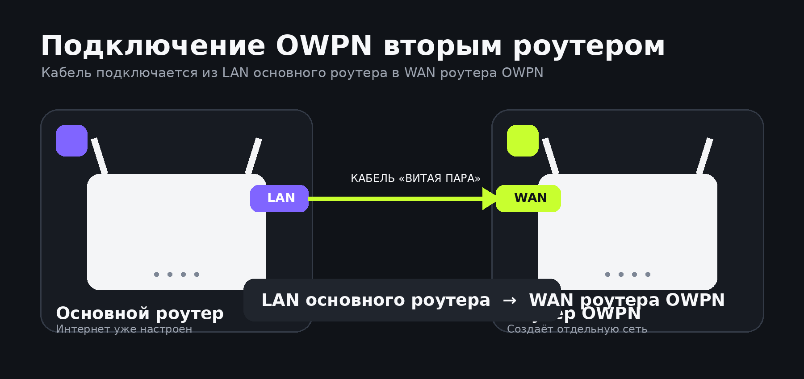
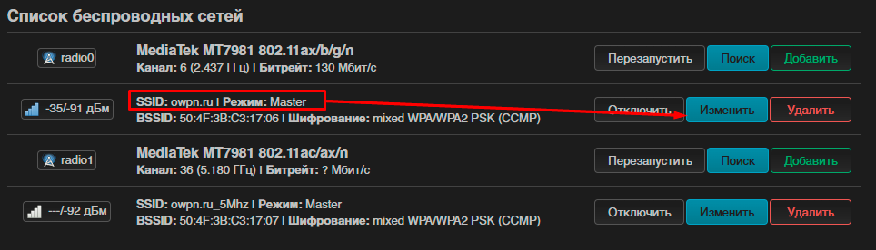
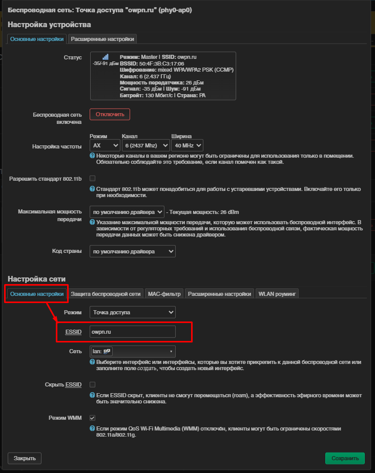
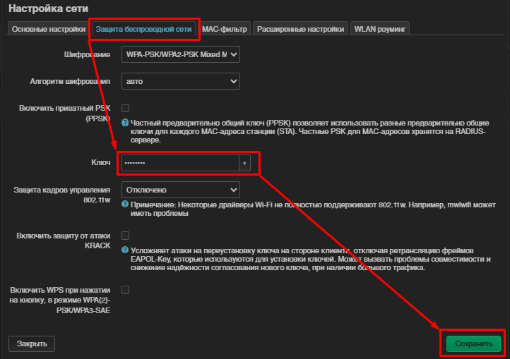
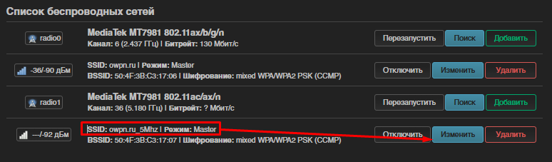
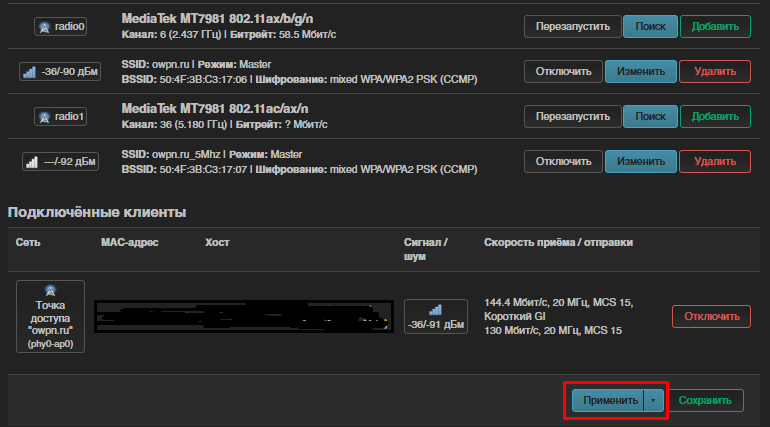
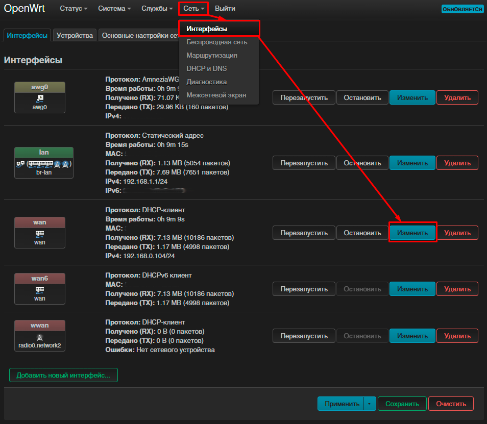
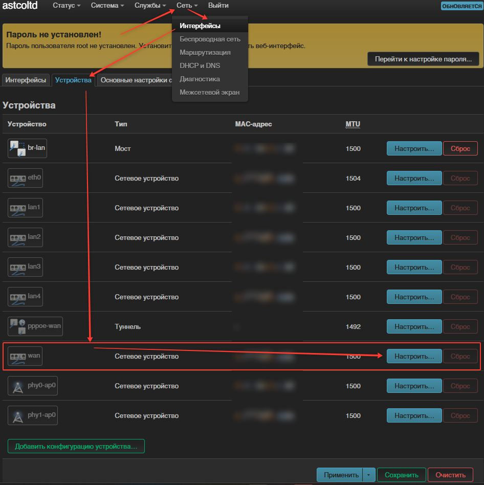
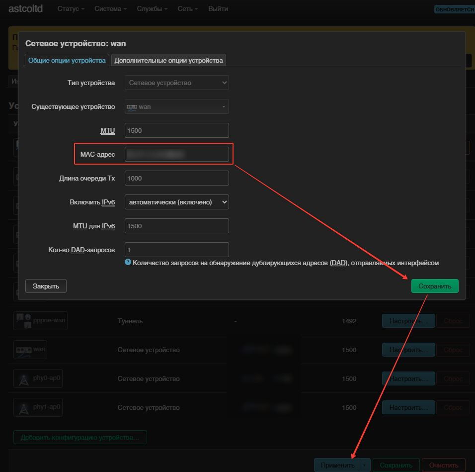
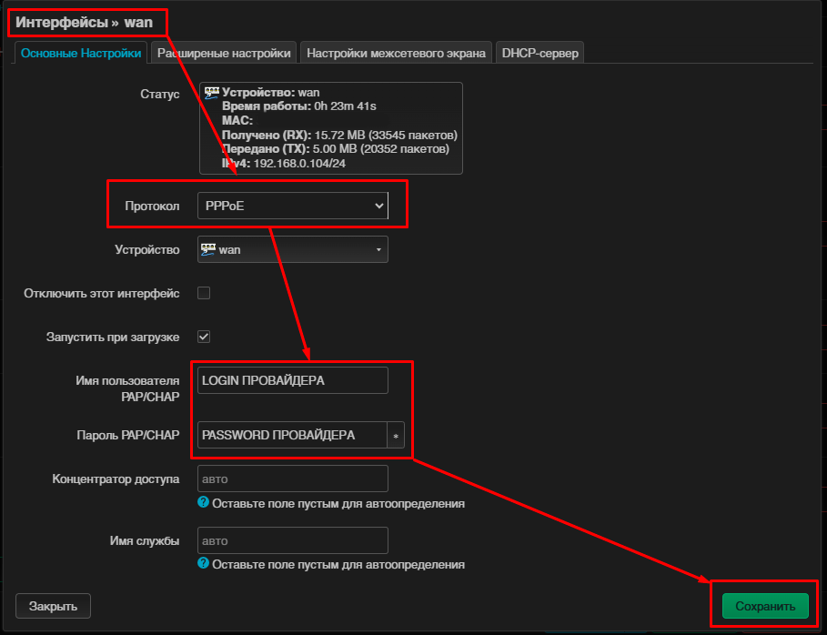

Кабель провайдера → WAN OWPN
При первом подключении вставьте кабель интернет‑провайдера в разъём WAN роутера OWPN.
В зависимости от модели WAN‑порт может находиться крайним слева или крайним справа.
Пройдите инструкцию сверху вниз. На каждом шаге выполняйте только одно действие.

Сначала выберите, как будет подключён OWPN.
При первом подключении вставьте кабель интернет‑провайдера в разъём WAN роутера OWPN.
В зависимости от модели WAN‑порт может находиться крайним слева или крайним справа.
Если роутер OWPN будет работать вторым после уже настроенного основного роутера, используйте обычный сетевой кабель — витую пару.
Подключите один конец кабеля в любой свободный порт LAN основного роутера. Второй конец подключите в порт WAN роутера OWPN.
На основном роутере кабель должен быть подключён именно в порт LAN. На роутере OWPN кабель подключается в порт WAN.
После подключения включите OWPN и дождитесь полной загрузки. Основной роутер передаст интернет на OWPN, а OWPN создаст собственную проводную и беспроводную сеть.

Для такого варианта подключения в большинстве случаев используется DHCP, который установлен в OWPN по умолчанию.
Если интернет не появился, убедитесь, что кабель подключён в правильные порты и на основном роутере включён DHCP‑сервер.
Убедитесь, что OWPN получил интернет от основного роутера и раздаёт собственную сеть.
Основной роутер выдал адрес через DHCP.
Откройте любой сайт на подключённом устройстве.
Роутер раздаёт собственную проводную и Wi‑Fi‑сеть.
Настройте отдельно сеть 2,4 ГГц и сеть 5 ГГц. Для каждой сети укажите своё имя и новый пароль.
В верхнем меню выберите «Сеть» → «Беспроводная сеть». Напротив сети owpn.ru нажмите «Изменить».

Откройте вкладку «Основные настройки». В поле ESSID введите новое имя Wi‑Fi.

Откройте вкладку «Защита беспроводной сети». В поле «Ключ» введите новый пароль.

Вернитесь к списку сетей и нажмите «Изменить» напротив owpn.ru_5Ghz. Измените ESSID и пароль.

Нажмите «Применить». Wi‑Fi отключится на несколько секунд, после чего подключитесь к новой сети.

Выберите, как ваше устройство подключено к OWPN.
Если компьютер подключён к роутеру сетевым кабелем, откройте браузер и введите адрес админ‑панели:
astcoltdastcoltdЕсли вы подключены к роутеру кабелем, просто откройте браузер и введите 192.168.3.1. При беспроводном подключении сначала подключитесь к Wi‑Fi owpn.ru с паролем astcoltd.
Откройте браузер и введите адрес http://192.168.3.1.
В поле логина укажите root. Поле пароля оставьте пустым.

В верхнем меню выберите «Сеть» → «Интерфейсы».
В строке WAN нажмите кнопку «Изменить».
Если не знаете тип подключения — позвоните провайдеру и уточните.
DHCP уже выбран в роутере по умолчанию.
Провайдер мог запомнить MAC‑адрес старого роутера.
Можно попросить провайдера зарегистрировать новый адрес либо изменить MAC в настройках OWPN.
В панели OpenWrt выберите «Сеть» → «Интерфейсы» → «Устройства».

Укажите MAC‑адрес прежнего устройства в формате XX:XX:XX:XX:XX:XX.
После ввода нажмите «Сохранить», затем «Применить».

В поле «Протокол» смените DHCP на PPPoE и нажмите «Сменить протокол».
В поле протокола выберите PPPoE и нажмите «Сменить протокол».
Введите логин и пароль от провайдера. Затем нажмите «Сохранить» и «Применить».

Раздел будет добавлен позже.
В интерфейсе появился IP‑адрес.
Откройте любой сайт.
Можно пользоваться роутером.
Настройте отдельно сеть 2,4 ГГц и сеть 5 ГГц. Для каждой сети укажите своё имя и новый пароль.
В верхнем меню выберите «Сеть» → «Беспроводная сеть». Напротив сети owpn.ru нажмите «Изменить».
Откройте вкладку «Основные настройки». В поле ESSID введите новое имя Wi‑Fi.
Откройте вкладку «Защита беспроводной сети». В поле «Ключ» введите новый пароль.
Вернитесь к списку сетей и нажмите «Изменить» напротив owpn.ru_5Ghz. Измените ESSID и пароль.
Нажмите «Применить». Wi‑Fi отключится на несколько секунд, после чего подключитесь к новой сети.
Напишите модель роутера, название провайдера и тип подключения.